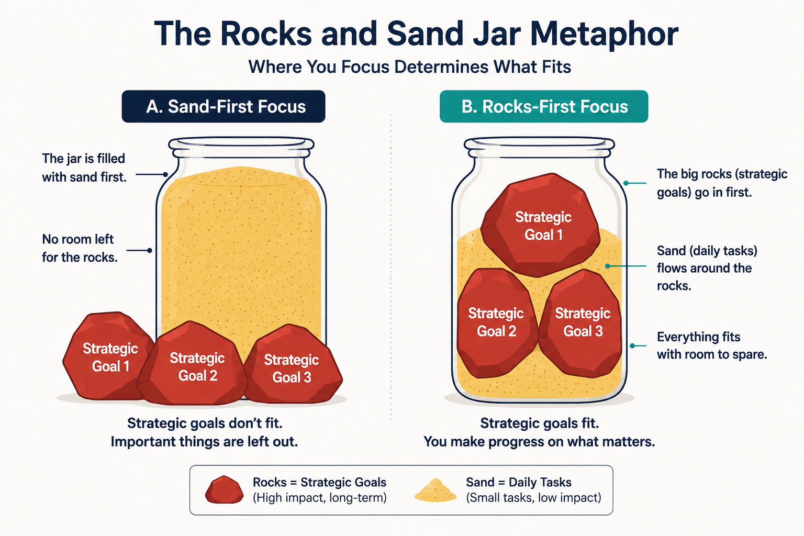
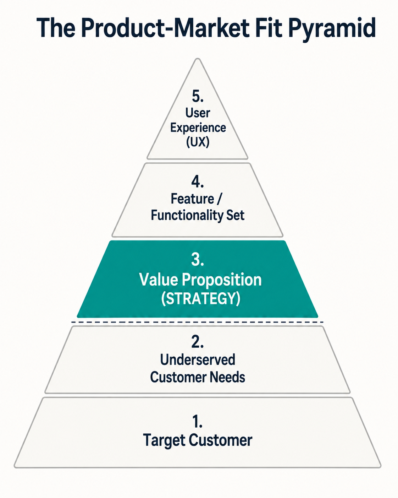
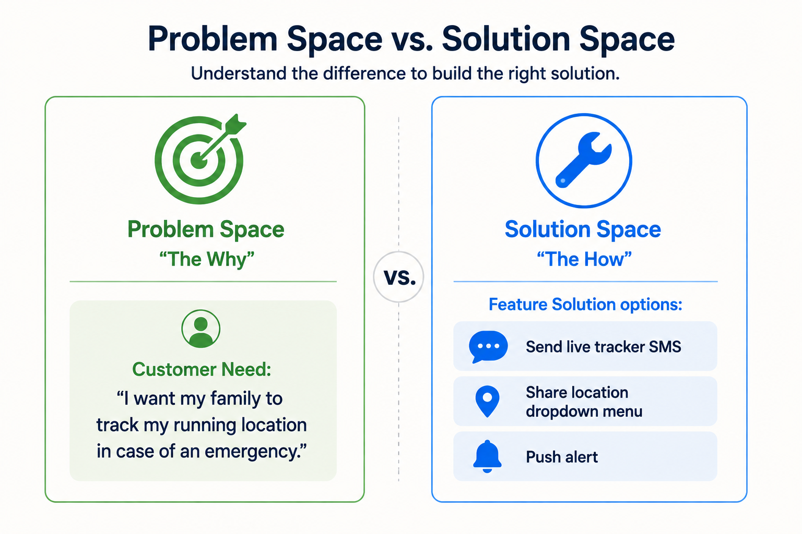
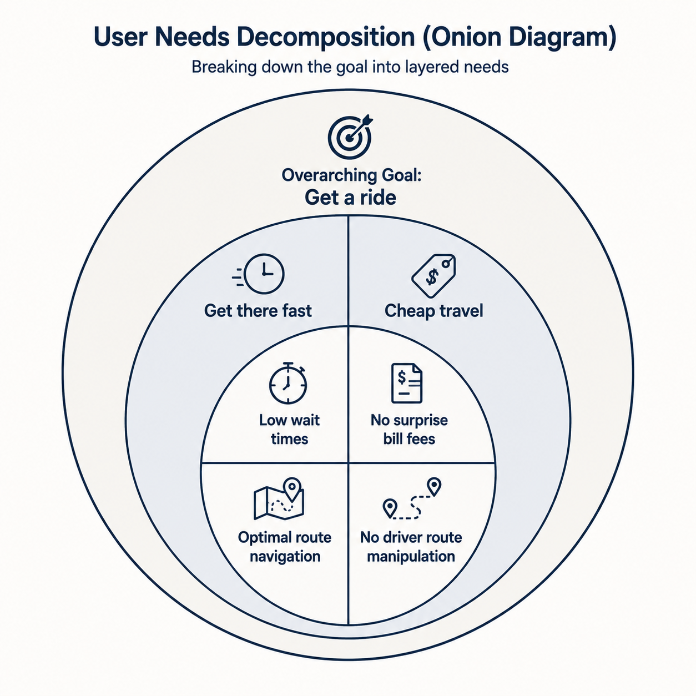
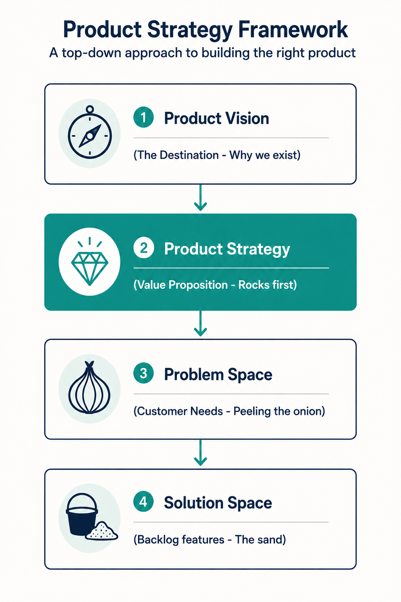

Your goal
Define Product Strategy and explain its role as a bridge between vision and daily delivery, apply Olsen's PMF Pyramid and the Rocks/Sand metaphor, and isolate customer needs from technical feature implementations.
Lecture overview
A great product vision is meaningless without a concrete plan to execute it. This lecture introduces Product Strategy as the plan that turns a high-level vision into reality, acting as the critical bridge connecting your long-term goal with short-term user stories.
Central argument
Many companies fail to build effective product strategies because they focus on short-term agile outputs (the "sand") and lack structured frameworks to formulate long-term goals. A successful Product Manager must define strategy in terms of customer benefits (the problem space) rather than features (the solution space). By prioritizing the strategic "big rocks" first and decomposing customer needs through structured problem-space mapping, PMs ensure that daily development work drives actual business and user value.
1. What is Product Strategy?
Product strategy is the plan for making your product vision a reality. It bridges the gap between the ultimate destination ("Why") and the sprint backlog files ("What/How").
Companies struggle with strategy because they focus on short-term weekly sprint velocity (often guilty in Agile teams where the Product Owner has no time for the bigger picture) and because strategy is difficult without structured frameworks.
2. Metaphor: Big Rocks vs. Sand
If you fill a jar with sand first, you won't have room for big rocks. But if you put the rocks in first, everything fits. The Sand represents daily minor tasks (emails, meetings, bug patches). The Big Rocks represent long-term strategic initiatives (validating customer needs, refactoring architecture, scaling platforms).
Agile velocity cycles are all about continuous delivery (the sand). Leadership and PMs must protect and schedule the "big rocks" first, letting the rocks guide where the sand goes.

22-rocks-vs-sand.png
Side-by-side jars diagram. Jar A (sand first) shows overflow and rocks failing to fit. Jar B (rocks first) shows the rocks resting stably at the bottom with pebbles and sand filling the gaps.
3. Product Strategy and the PMF Pyramid
Dan Olsen's Product-Market Fit Pyramid splits a product lifecycle into a Market segment and a Product segment. Market layers (Target Customer and Needs) cannot be controlled directly. Product layers (Value Proposition, Features, UX) are controlled by the team. **Product Strategy lives at the Value Proposition layer**—the choice of which customer benefits to deliver.

22-pmf-pyramid.png
The 5-tiered PMF Pyramid. The top three layers represent Product Execution (UX, Features) and Product Strategy (Value Proposition), while the bottom two represent Market (Needs, Customers). Tier 3 Strategy is highlighted in teal.
4. Problem Space vs. Solution Space
Product strategy must focus on customer benefits, not features. The Problem Space describes the user's unmet need or desired benefit (Why/Who). The Solution Space is a specific technical design or implementation (How/What).

22-problem-vs-solution.png
Comparative split diagram. Left side shows green target labeled Problem Space: 'Share running location during emergencies'. Right side shows blue wrench labeled Solution Space options: 'SMS share widget, dropdown selector, push notification'.
5. Decomposing Needs: Peeling the Onion
Isolating critical business problems requires "peeling the onion"—asking "Why" during user research to peel away superficial requests and expose nested customer needs. The Uber (2009) passenger goal "Get a ride" peels into speed needs (low wait times, routes) and cheap needs (no surprises, no billing overcharges).

22-peeling-onion.png
Concentric onion ring diagram. Outer layer is 'Get a ride'. Middle layer splits into 'Get there fast' and 'Cheap travel'. Inner core exposes 'low wait times, best route' and 'no surprise fees, zero billing fraud'.
Practical Product Management example
Situation
A PM at a fitness tracking app receives a high-priority feature request from stakeholders: "We need to add a dropdown menu of pre-written messaging status templates to our running tracker." The engineering team has already started writing database migrations to store template strings.
Decision
The PM halts the development work to validate the problem space. They apply the "Five Whys" analysis to peel the request: Why do users need messaging templates? To share their location quickly. Why do they need to share location quickly? To let family members know where they are while jogging. Why do they need family members to know? In case they get injured or run into trouble on isolated trails. The PM realizes the core benefit is personal safety tracking. The PM re-writes the backlog requirement in the problem space: "As an outdoor runner, I want my emergency contacts to monitor my live route so that they can assist me if I get injured."
Reasoning
The dropdown menu is a solution-space guess. By focusing on the problem space (safety tracking), the PM opens up superior solutions. Instead of complex template dropdowns, the engineering team proposes a simple "Send Live Track" button that integrates with the phone's native GPS and SMS apps.
Consequence
The development team avoids writing custom template storage code, saving 2 weeks of sprint time. The "Send Live Track" feature launches quickly and achieves 78% daily active use among early adopters. User feedback indicates that safety tracking (the problem space) was the primary reason joggers recommended the app to friends.
Transferable lesson
Never let feature requests bypass problem-space validation. Peel the onion by asking "Why" to isolate the core customer benefit before writing code. This avoids bloating the product with unnecessary UI features.
Common misunderstandings
"Product strategy is our product roadmap of features"
Correction: A list of features is not a strategy. Features live in the solution space. Product strategy lives in the value proposition layer of the PMF Pyramid and defines the customer benefits you choose to deliver. Roadmaps should be structured around outcomes and user benefits, not delivery dates for code.
"Agile development automatically builds good product strategy"
Correction: Agile is a delivery methodology optimized for shipping continuous increments of code (the "sand"). It does not generate product strategy. Without strong leadership protecting the "big rocks" first, agile teams naturally fall into the "feature factory" trap—shipping code fast without verifying if it solves strategic user problems.
"We must solve the entire problem space at once"
Correction: The problem space can be massive (like the Uber cab onion layers). A PM must prioritize which specific underserved needs to tackle first. Attempting to solve all layers of the onion on day one leads to scope creep and delayed launches.
Key concepts and definitions
- Product Strategy: The plan for making a product vision a reality, living at the value proposition layer of the PMF Pyramid.
- Big Rocks vs. Sand: A prioritization metaphor where "rocks" represent long-term strategic goals and "sand" represents short-term daily tasks.
- Problem Space: The set of customer needs, pain points, and desired benefits that a product is designed to solve.
- Solution Space: The specific features, software designs, and technical implementations built to solve problem-space needs.
- PMF Pyramid: A 5-layer framework mapping Target Customer and Needs (Market) to Value Proposition, Features, and UX (Product).
Key takeaways
- Strategy is the plan to realize your vision, bridging the gap between high-level purpose and daily backlog delivery.
- The "Big Rocks vs. Sand" metaphor dictates that you must schedule long-term strategic work first, or daily tasks will overwhelm your team.
- Agile focus on continuous output naturally prioritizes the "sand," making strong product leadership essential to protect the "rocks."
- Product Strategy lives at the Value Proposition layer of the Product-Market Fit Pyramid, not in features or UX.
- You cannot control your market (customer needs), but you control which market segment your product strategy targets.
- Separate the problem space (Why/Who) from the solution space (How/What) to avoid building unvalidated, complex features.
- Peel the onion by asking "Why" during user research to decompose high-level goals into detailed layers of underserved needs.
- Uber Cabs (2009) decomposed needs from "get a ride" down to speed (low wait times) and cost trust (no surprise fees).
Visual summary

22-visual-summary.png
Flowchart connecting Product Vision at the top, to Product Strategy (Value Prop / Rocks first), descending into Problem Space (Peeling onion), and ending in Solution Space (Backlog execution).
One-minute review
Define Strategy First: Product strategy is your value proposition—the specific customer benefits you choose to deliver to realize your vision. Prioritize Big Rocks: Put the rocks (strategy) in first. If you focus on the sand (daily agile delivery), your product will lack long-term direction. Focus on the Problem: Keep your backlog in the problem space (needs). Ask "Why" to peel back feature requests and uncover the real user problems.
Interactive Practice
Review the components of the Product-Market Fit (PMF) Pyramid. Click on the tabs below to read the strategic definition for each tier.
Target Customer (Market Layer)
The specific demographic, user profile, or customer persona you intend to serve. You cannot modify customer demographics directly, but you choose which market segment to target.
Underserved Customer Needs (Market Layer)
The user pain points or desires that are not currently satisfied by existing products. This describes the problem space requirements that the market demands.
Value Proposition (Product Layer - Strategy)
The core customer benefits your product chooses to deliver to satisfy the underserved needs. This is where Product Strategy lives. It dictates the value statement before any code is drafted.
Feature / Functionality Set (Product Layer)
The specific technological capabilities, software functions, or widgets built to deliver the promised value proposition benefits (lives in the solution space).
User Experience (Product Layer)
The visual design, interactions, screen flows, and styling that bring the technical features to life in a way that is easy and pleasing for the target customer to operate.
Test your ability to separate the problem space from the solution space. Classify each product item below into its correct category.